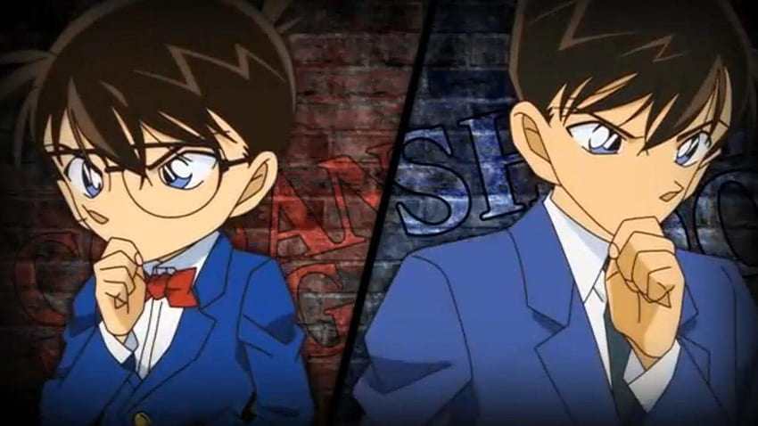
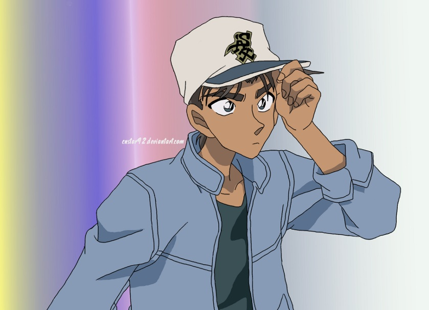
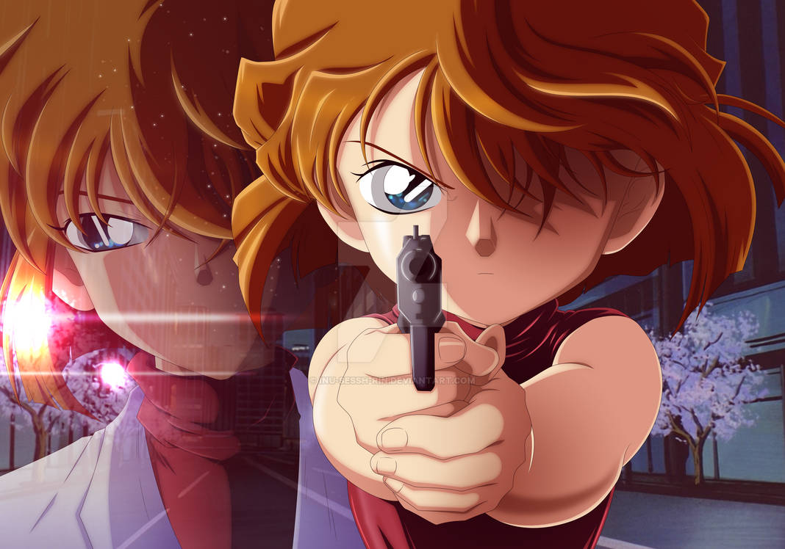
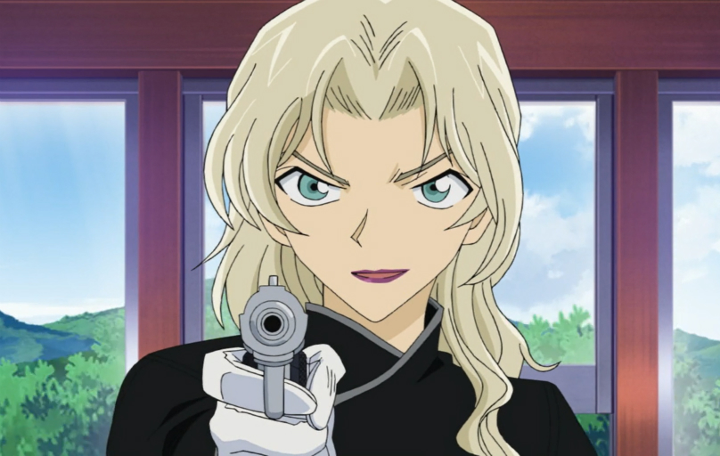
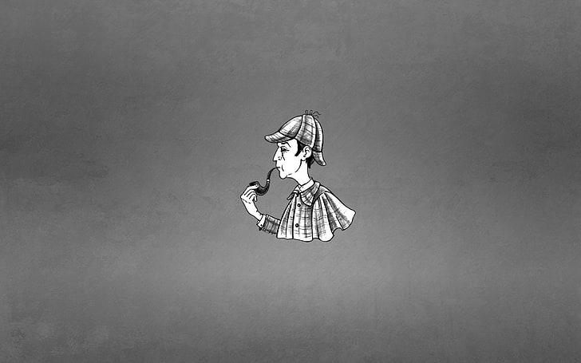
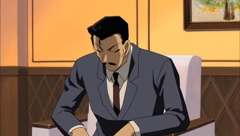
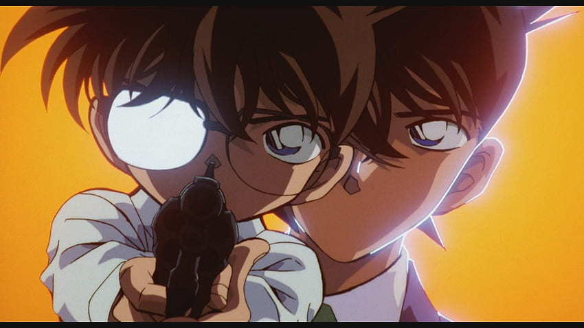

Case Closed: also known as Detective Conan, is a captivating anime centered around Shinichi Kudo, a brilliant teenage detective who, after being transformed into a child, adopts the alias Conan Edogawa to solve baffling cases. With his sharp intellect and deduction skills, Conan navigates intricate mysteries alongside a diverse cast of characters, including his friends and allies in the Junior Detective League. Detective Conan offers a blend of suspenseful investigations, clever plot twists, and engaging character dynamics. It explores themes of justice, perseverance, and the power of logic, making it a compelling watch for mystery enthusiasts and fans of intriguing storytelling.
Here are some of the famous quotes from Detective Conan:
— Kudo Shinichi
— Heiji Hattori
— Haibara Ai
— Vermouth
— Sir Arthur Conan Doyle's Sherlock Holmes
— Mouri Kogoro
— Edogawa Conan
Click to go back to main screen